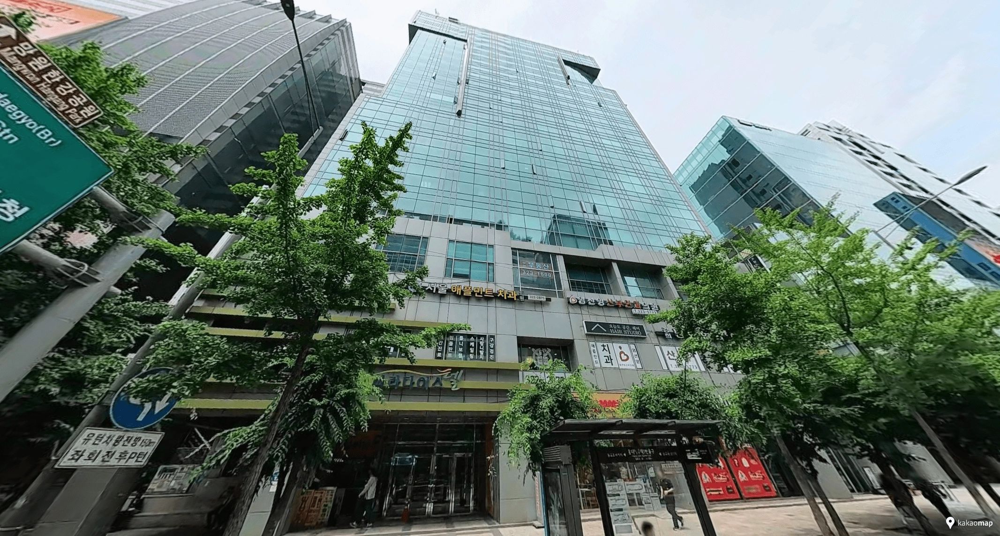

For 6 people — By Hongik Univ Station
JSM Studio Hongdae
Entire apartment · duplex option for up to 6 · kitchen · washing machine · elevator
For a group of six that wants to stay together in central Hongdae, JSM Studio is a practical apartment-style option right by Hongik University Station. A duplex option can accommodate up to six guests, while a kitchen, washing machine and elevator make the stay easier for families travelling with luggage or staying for several days. This is a privately operated apartment rather than a full-service hotel, so check-in and on-site service are different from a conventional hotel.
